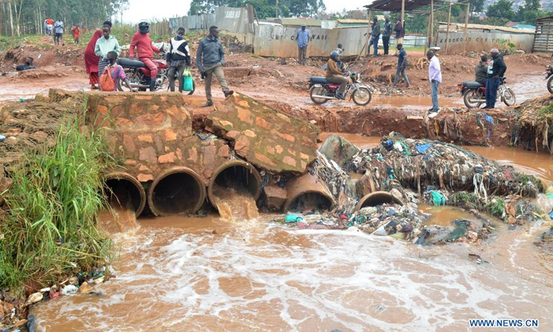
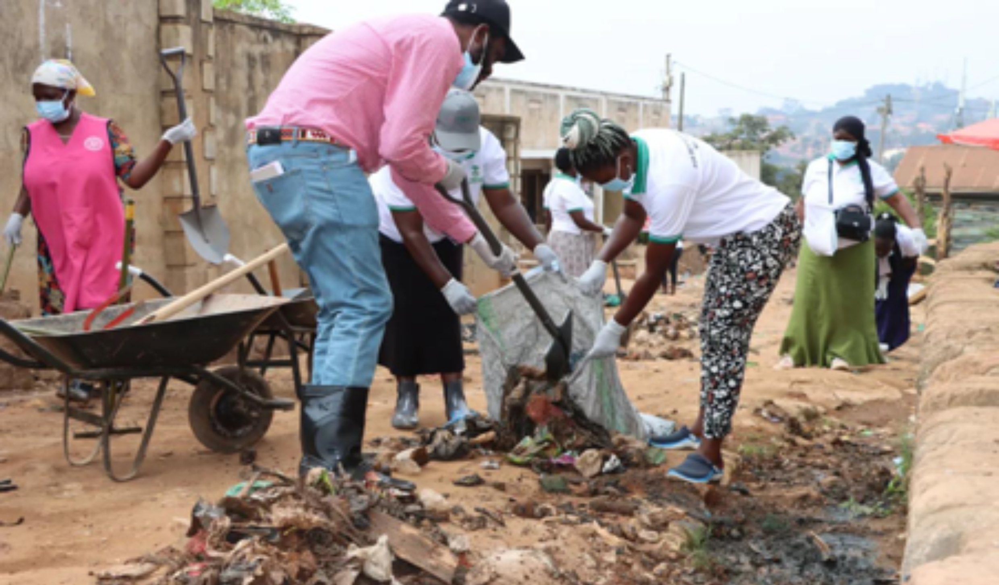
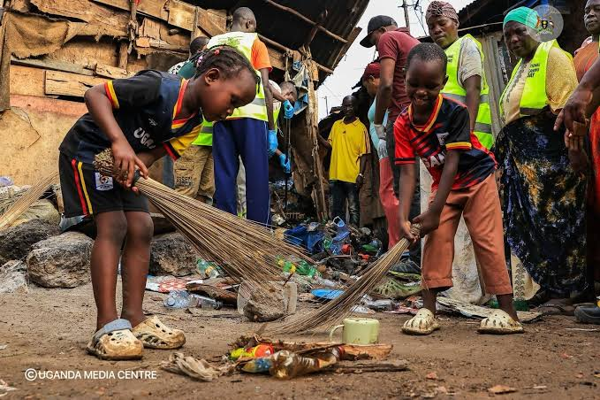
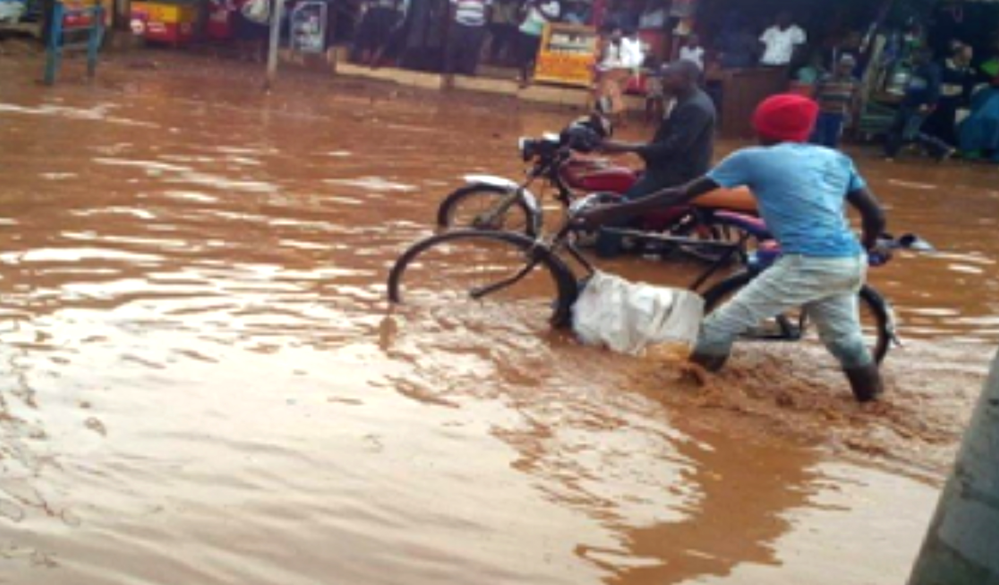

🎯 Our Mission
To provide an accessible digital platform connecting Bwaise residents with waste collection information, environmental reporting support and community participation.
Working together to improve waste management, report environmental concerns and promote a clean and safe community.

GET TO KNOW US
Bwaise Clean & Safe is a proposed community-focused web platform designed to support better waste management and environmental reporting in Bwaise.
It helps residents access waste collection information, report environmental concerns and learn responsible environmental practices. It also aims to improve communication between residents, service providers, local authorities and community organisations.

To provide an accessible digital platform connecting Bwaise residents with waste collection information, environmental reporting support and community participation.
To contribute towards a cleaner, healthier and safer Bwaise through environmental awareness, responsible waste management and community collaboration.
Provide a convenient channel for reporting illegal dumping, blocked drainage and flooding.
Make waste collection information and available services easier to access.
Support report monitoring and communication about submitted complaints.
Share information about responsible waste disposal and drainage protection.
Encourage cooperation between residents, service providers and authorities.
Promote community activities and shared environmental responsibility.
LEARN AND TAKE ACTION
Small actions by residents can help keep Bwaise clean, healthy and safe.

Put rubbish in designated bins or approved collection points. Do not throw waste in roads, open spaces or drainage channels.
Where possible, separate plastics, paper, food remains and other waste to make reuse, recycling and safe disposal easier.
Clean around your home and workplace. Encourage family members and neighbours to take part in keeping shared spaces clean.
Do not dump rubbish on roadsides, vacant plots or near water channels. Use recognised waste collection services.
Keep drains free from rubbish and report blocked drainage. Waste in drainage channels can contribute to flooding.
Wash your hands after handling waste and keep food and water protected from rubbish and dirty surroundings.
WE WOULD LIKE TO HEAR FROM YOU
Contact the Bwaise Clean & Safe project team for questions, suggestions or information about environmental concerns.
Project: Bwaise Clean & Safe
Location: Bwaise, Kawempe Division, Kampala, Uganda
Email: Add project email address
Phone: Add project phone number
ADMINISTRATION
This section demonstrates how an administrator could monitor community reports and waste management requests.

Illustrative figures showing how an administrator could monitor activity.
Total Reports
Illustrative figureUnder Review
Illustrative figureReferred Reports
Illustrative figureResolved Reports
Illustrative figureExamine reports submitted by residents, including descriptions, locations and supporting photographs.
Check information to identify incomplete, unclear or duplicate reports.
Record progress as reports move through review, referral and resolution stages.
Review waste collection requests and coordinate with relevant collection providers.
Review report categories and progress information to support administrative decisions.
Coordinate information sharing and community environmental awareness activities.
These are fictional examples showing how reports could appear in the dashboard.
| Reference Number | Problem Category | Location | Date Submitted | Report Status |
|---|---|---|---|---|
| BCS-10000001 | Blocked Drainage | Example Area A, Bwaise | 10 Nov 2026 | Under Review |
| BCS-10000002 | Illegal Dumping | Example Area B, Bwaise | 11 Nov 2026 | Referred |
| BCS-10000003 | Flooding | Example Area C, Bwaise | 12 Nov 2026 | Resolved |
Keep residents' contact details and submitted photographs confidential and accessible only to authorised personnel.
Ensure report details and progress updates are recorded accurately and responsibly.
Refer concerns to the appropriate service providers or local authorities when necessary.